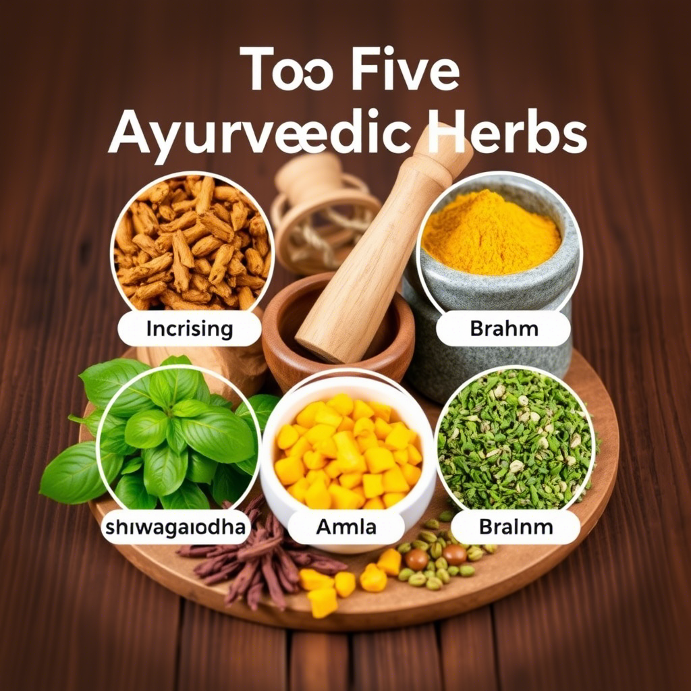
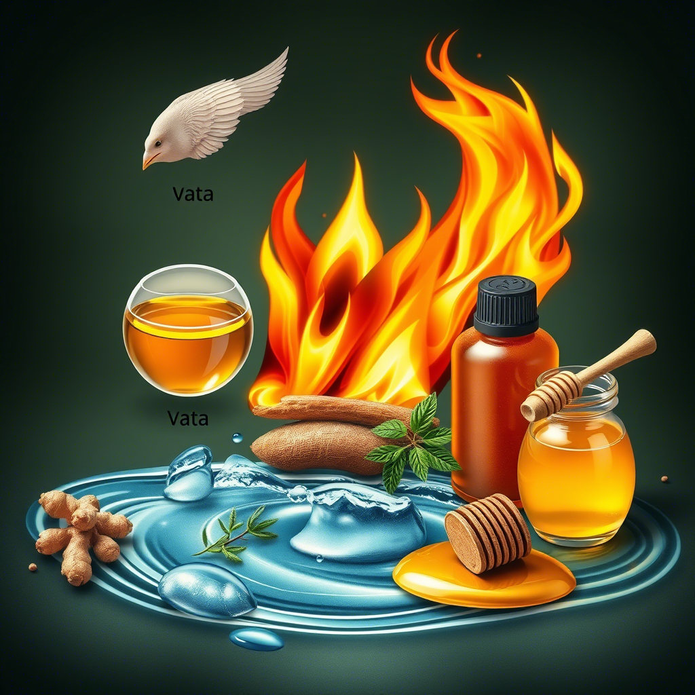

Daily Routines in Ayurveda: The Path to Balance
Discover how Dinacharya - the ancient Ayurvedic daily routine - can transform your health by aligning your body with natural rhythms.
Read MoreDiscover how Dinacharya - the ancient Ayurvedic daily routine - can transform your health by aligning your body with natural rhythms.
Read MoreExplore our collection of articles written by certified Ayurvedic practitioners
Learn how to align your diet with nature's cycles for optimal digestion, energy, and immunity throughout the year.
Read MoreDiscover how Ayurveda approaches digestive health and learn simple practices to improve your Agni (digestive fire).
Read MoreUnderstand which food combinations promote health and which ones may create toxins according to Ayurvedic principles.
Read More
Discover the most versatile Ayurvedic herbs that can address common health concerns naturally and effectively.
Read MoreStrengthen your immune system naturally with these time-tested Ayurvedic herbs and formulations.
Read MoreExplore the numerous health benefits of turmeric and learn how to use it effectively according to your dosha.
Read MoreCustomize your yoga practice according to your dominant dosha (Vata, Pitta, or Kapha) for maximum benefits.
Read MoreLearn specific breathing techniques tailored to pacify Vata, Pitta, or Kapha imbalances and restore harmony.
Read MoreDiscover the Ayurvedic perspective on this powerful yogic sleep practice and how it can help reduce stress and fatigue.
Read MoreStep-by-step guide to creating an energizing and balancing morning routine based on your dosha type.
Read MoreLearn how to wind down properly according to Ayurveda to ensure deep, restorative sleep every night.
Read MoreDiscover how this daily Ayurvedic practice can improve circulation, reduce stress, and promote longevity.
Read MoreExplore meditation practices tailored to your dosha type for optimal mental clarity and emotional balance.
Read MoreLearn how to identify stress patterns according to your dosha and natural ways to restore balance.
Read MorePractical ways to incorporate mindfulness into your daily life for greater peace and awareness.
Read MoreLearn the best times and methods for detoxification according to Ayurvedic principles and seasonal changes.
Read MoreSpecial practices and dietary adjustments to stay healthy during the rainy season according to Ayurveda.
Read MoreStay warm, energized, and healthy during the cold months with these Ayurvedic recommendations.
Read MoreEffective natural treatments to prevent and recover from seasonal illnesses using kitchen ingredients.
Read MoreCommon kitchen spices and simple preparations that can dramatically improve your digestion.
Read MoreNatural remedies for common skin issues based on your dosha type and skin constitution.
Read More
A beginner's guide to Vata, Pitta, and Kapha - the fundamental energies that govern your health.
Read MoreLearn why Ayurveda considers strong digestion as the cornerstone of good health and how to strengthen yours.
Read MoreFundamental concepts that form the basis of living in harmony with nature according to Ayurveda.
Read More